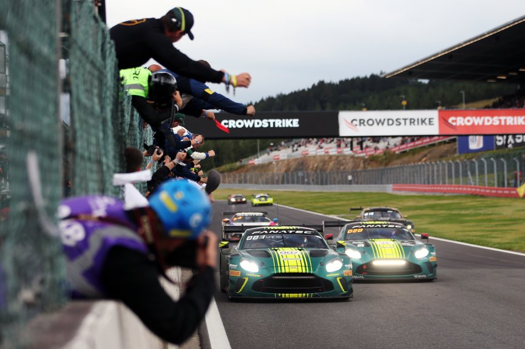
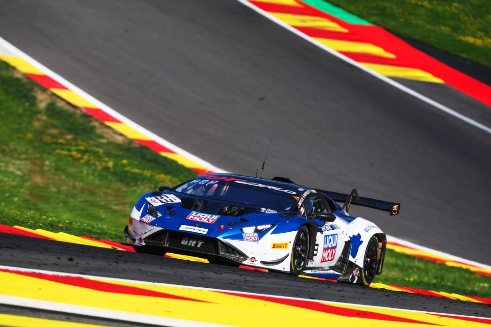
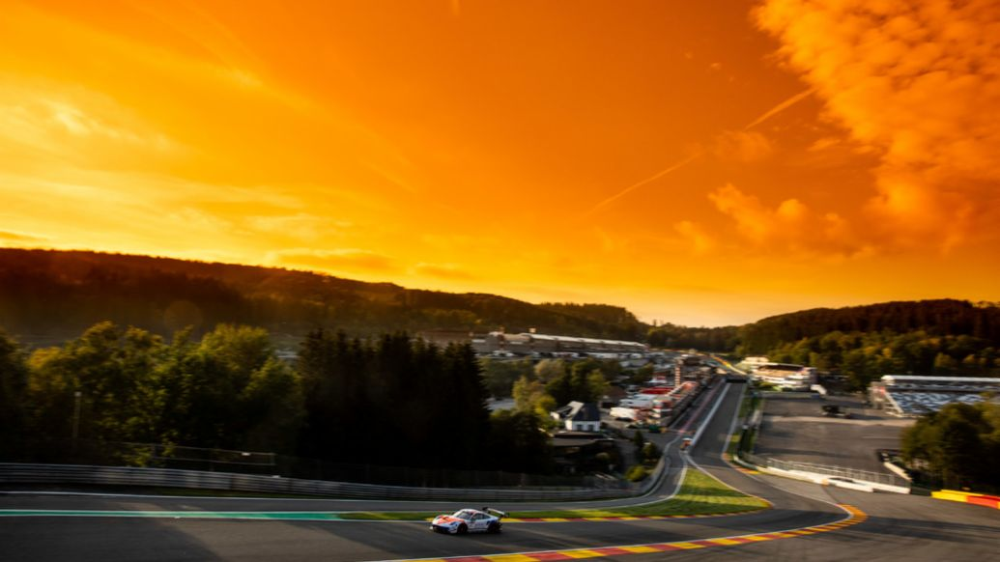
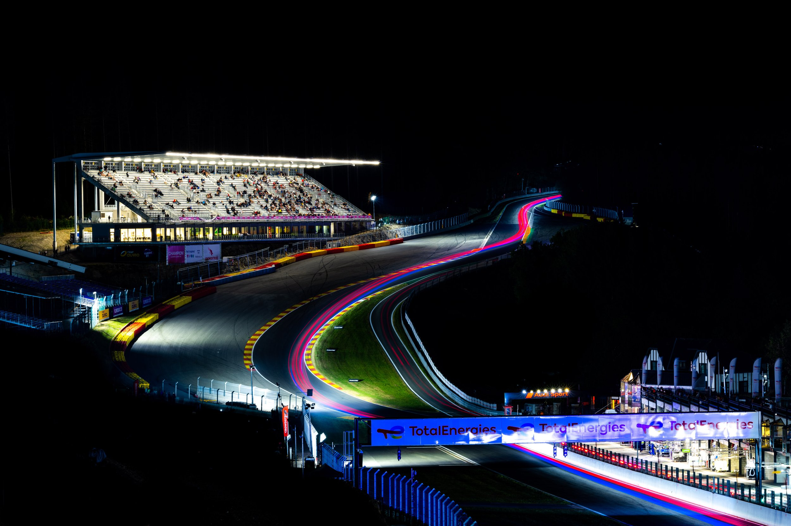

informacion
Conoce al ganador de las 24h, y los cambios climaticos que soportaron .
El equipo GRT

El equipo ganador, GRT - Grasser Racing, logró la victoria con el Lamborghini Huracán GT3 EVO2 #63. La carrera tuvo lugar en el circuito de Spa-Francorchamps en Bélgica. El equipo italiano tuvo un duelo emocionante con el Porsche #96 de Rutronik Racing durante las últimas horas de la carrera, pero finalmente lograron cruzar la línea de meta en primer lugar. El podio lo completó el Ferrari #51 de Alessandro Pier Guidi, Alessio Rovera y Vincent Abri.
Carroceria que gano las 24h de Spa

El equipo que ganó las 24 Horas de Spa 2025 fue el Lamborghini Huracán GT3 EVO2 #63 de Grasser Racing Team, conducido por Mirko Bortolotti, Jordan Pepper y Luca Engstler. Este triunfo marca la primera victoria de Lamborghini en esta clásica carrera de resistencia.
Spa en la tarde

El atardecer en las 24 Horas de Spa es un momento mágico y cargado de emoción. La luz dorada cae sobre el circuito de Spa-Francorchamps, iluminando curvas míticas como Eau Rouge y Blanchimont con tonos cálidos y reflejos en los autos. Las sombras se alargan entre los bosques belgas y la atmósfera se vuelve más densa: es la antesala de la noche, donde la belleza del paisaje contrasta con la tensión en pista. Es un instante de calma aparente, donde el sol se despide y comienza el verdadero desafío de la resistencia.
Spa de noche

La noche en las 24 Horas de Spa transforma el circuito en un escenario intenso y electrizante. La oscuridad envuelve los bosques de Francorchamps, y solo los faros de los autos cortan la negrura a través de curvas como Eau Rouge y Pouhon. Los reflejos de las luces, la lluvia ocasional y la niebla crean una atmósfera única y desafiante. La concentración es total: cada error puede ser definitivo. Es el corazón de la carrera, donde reina el silencio exterior, el estruendo de los motores y la lucha constante contra el sueño, la fatiga y el clima. La noche en Spa no perdona, pero es parte de su leyenda.
Pista actual

El circuito de Spa-Francorchamps, sede de las 24 Horas de Spa, es uno de los trazados más icónicos y desafiantes del mundo. El clima es impredecible: puede llover en un sector mientras en otro hay sol, lo que añade dificultad estratégica. Spa combina velocidad, técnica y belleza natural, haciendo de esta pista un ícono de la resistencia mundial.